Electronics Design Automation - KiCad PCB Layout
BME254L - Spring 2026
Electronics Design Automation: PCB Layout
PCB Layout
Why a PCB?
Breadboards are good for simple testing, but not robust.
Need to reduce form factor.
Reduce noise, capacitive effects, etc.
SMD (versus thru-hole) components are becoming ubiquitous.
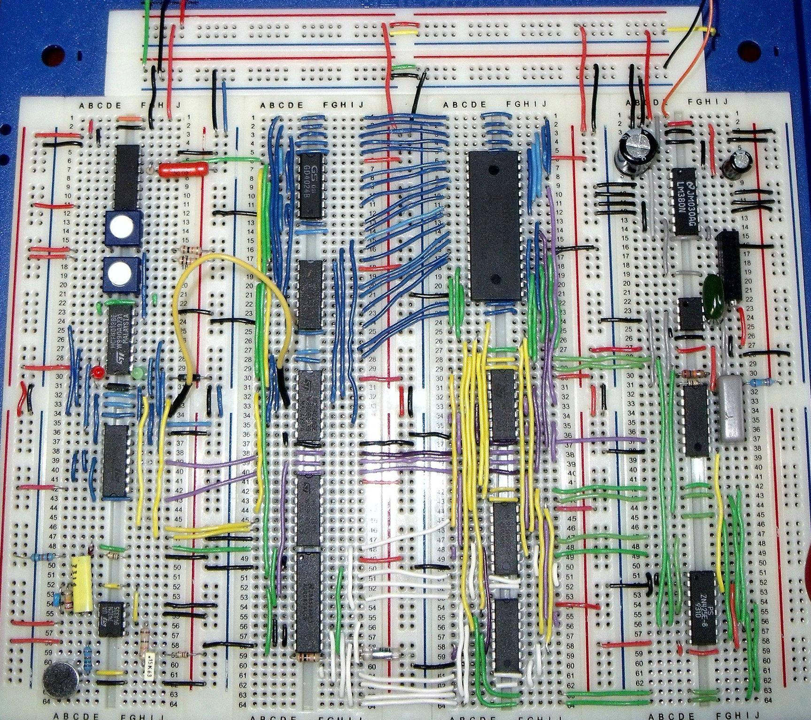
PCB Examples
Physical Rendering
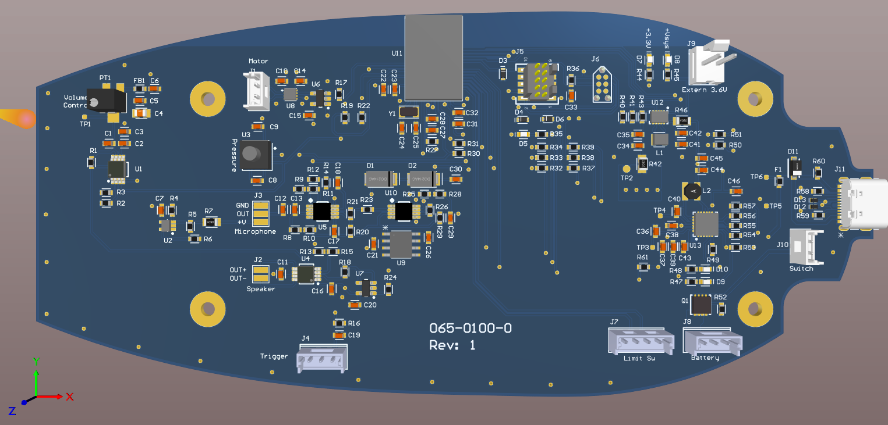
Top Layer
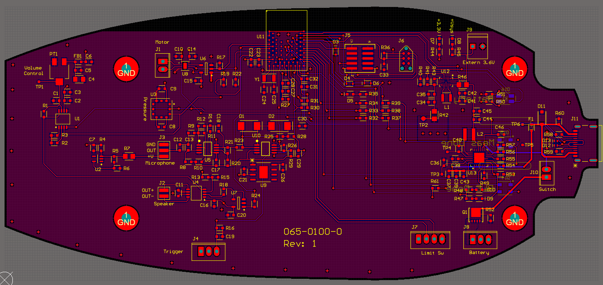
### Bottom Layer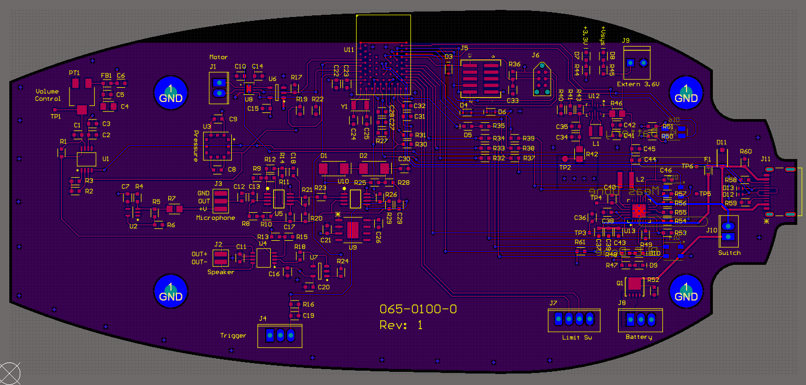
This is actually a four-layer PCB…
There are actually two layers in the middle of the board that are not visible in the above images:
Power Layer: 3.3 V (
VDD)GND Layer
Two-layer PCB
Single-layer boards for “trivial” layouts.
Two-layer board best balance of flexibility and complexity for “simple” layouts.
\(>\) 2 layers increases complexity (but putting power and ground on their own layers can be advantageous)
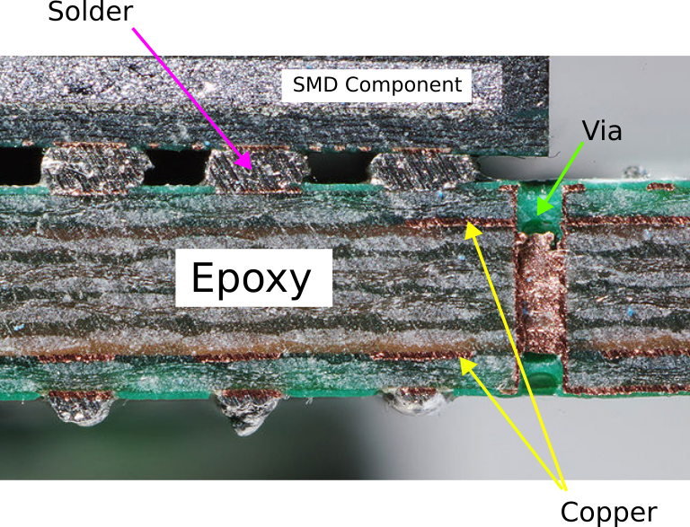
Surface Mount Devices (SMD)
Surface mount components on the same side as the traces
Soldering using reflow.
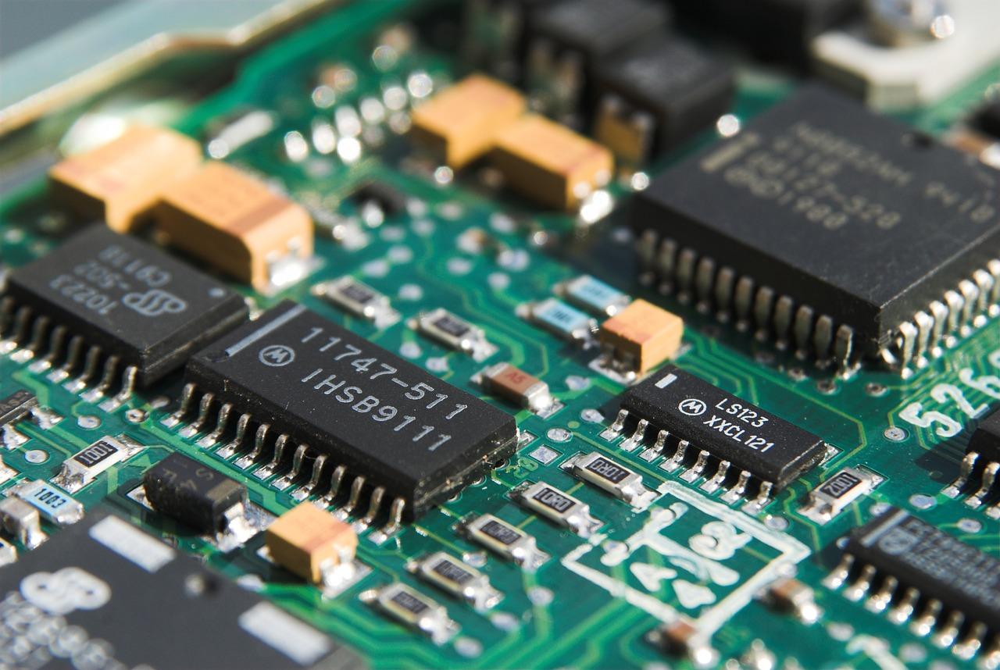
Through-hole Components (THT)
Thru-hole components on the opposite side from the traces (ease of soldering).
Can be used on breadboards and protoboards too.
Way less popular than SMD for production boards.
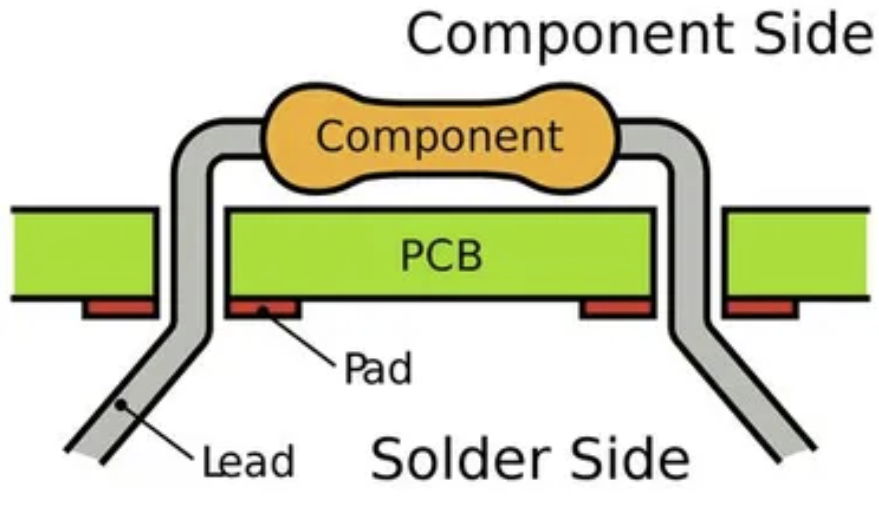
PCB Editor
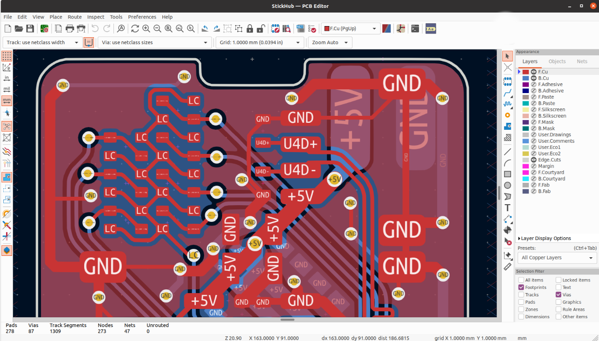
PCB Layout
Getting Started
Make sure that all parts are annotated and have footprints in the schematic.
If needed, include Mounting Holes in your design.
Switch to the PCB editor (
Tools\(\rightarrow\)Update PCB from Schematic).All component pins/pads that need to be connected with traces will be connected with airwires.
Creating the PCB Edge Outline
Use Graphics Lines tool to create board outline (Layer:
Edge.Cuts)Layout components based on your design needs / constraints, considering orientation, board side, etc.
You can import a picture / CAD drawing to base the Edge outline on.
Design Rules
Each board manufacturer has different capabilities and constraints on PCB fabrication.
For our mil, setup Design Rules (
File\(\rightarrow\)Board Setup...) as follows:Trace width (\(\geq\) 20 mil)
Drill diameter (\(\geq\) 1 mm)
Clearance (\(\geq\) 32 mil)
This can be done automatically by importing a design rules (DRU) file. I will be providing a
*.kicad_drufile for you to use in your labs and project.
Routing Traces (Tracks)
Setup Net Classes for signal and power/ground (wider / more clearance).
Choose the layer that you want your traces to be on (Front (
F.Cu) or Back (B.Cu)).Route traces to make connections indicated by the airwires.
Remember that you can go around and under parts.
Avoid right angles (mitigate EMI).
You do not need to connect
GNDwith traces, as you will be creating a copper pour for that.Use
Filled Zonetool to create a copper pour (F/B.Cu), usually associated with theGNDnet.Clearout other zones, as needed (e.g., plug, wireless controller).
Perform Design Rule Check (DRC)
Power Traces / Layers
Larger trace width for greater power delivery (less resistance for more current).
Even better to dedicate an entire layer
More direct return paths
Shielding (EMI)
Reduce noise (switching)
Dissipate heat
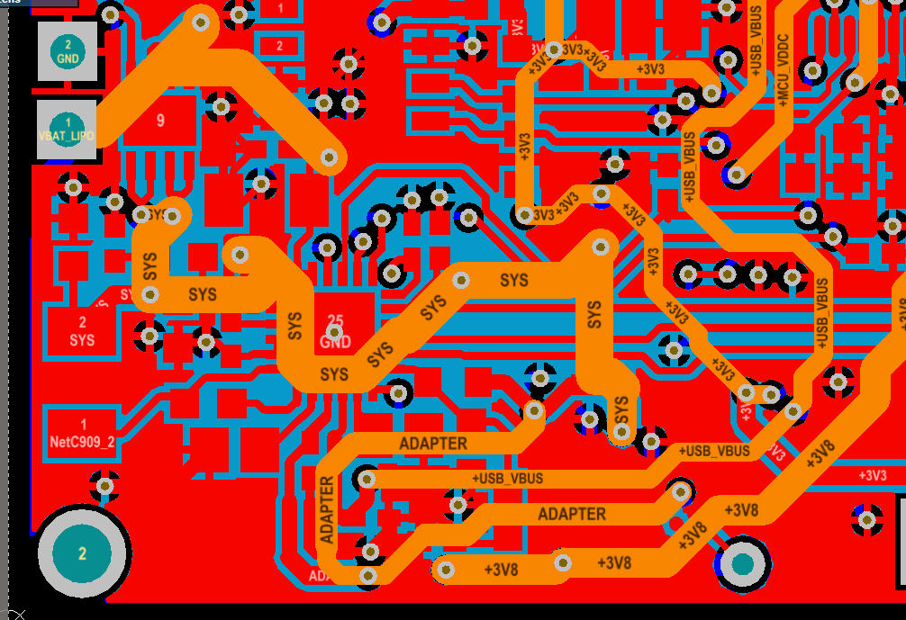
Copper Ground Pours (Filled Zones)
Help reject noise & interference
Lower impedance to ground
Save milling time and bits!!
Filled Zone Islands
- Avoid creating “islands” of copper pour not connected to the main pour.
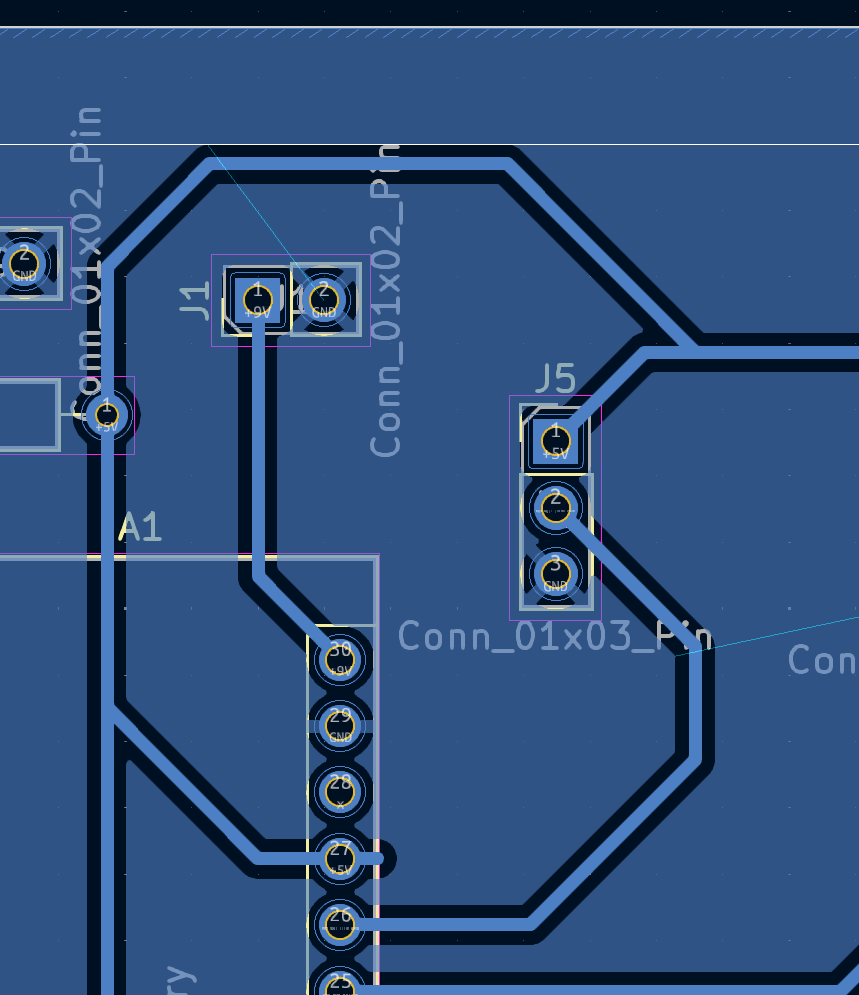
Ways to fix:
Rearrange components to allow the filled zone to be contiguous.
When using an IC with multiple functional pins, try changing utilized pins.
Use a Via on a two-sided board.
Use a 0 \(\Omega\) R to connect the island to the main pour. The resistor acts as a wire bridge to jump over other traces.
Reducing Noise
Separate analog (
AGND) and digital grounds (GND), and electrically connect using a Net Tie.Reduce trace “loops” (RF interference)
Place decoupling capacitors next to power pins they are supporting.
Ground Connections
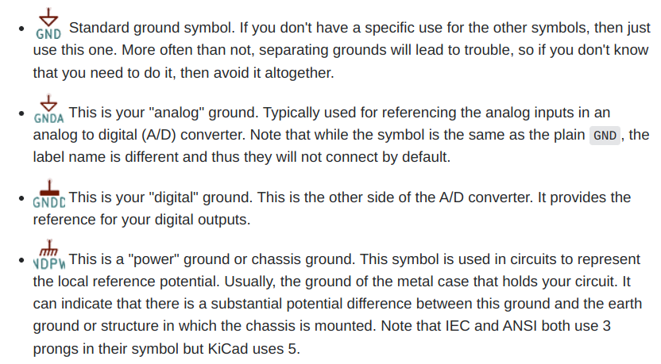
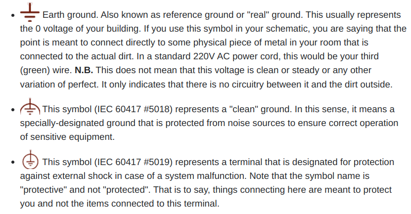
Tips-n-Tricks
You need to make sure that you update your PCB everytime you edit your schematic. Failing to do so will create asyncrony of the two documents, which will be painful to resolve.
Clean up airwires with the
Ratsnesttool.Vias: connections between top and bottom layers of a board. These can be plated or connected with a physical wire.
Use plugs/sockets for off-board wire connections.
Strategically place test pins / pads.
Parallel running connections (e.g.,
PWR&GND) can be routed as a Differential Pair.
Thermal Relief
Thermal relief is a technique used to make soldering easier by reducing the amount of copper connected to a pad, especially useful for large copper pours.
The thermal relief pattern reduce thermal conductivity away from the pad, making it easier to solder.
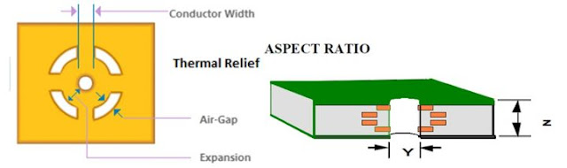
3D View and STEP Export
You can render a 3D view of your PCB with your components, as long as 3D models are associated with the components.
You can export a STEP file for mechanical design that can be importent into your CAD software for integration with other components.